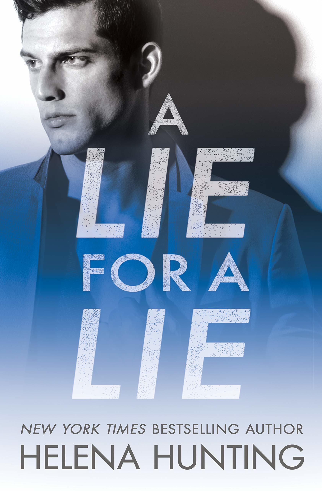
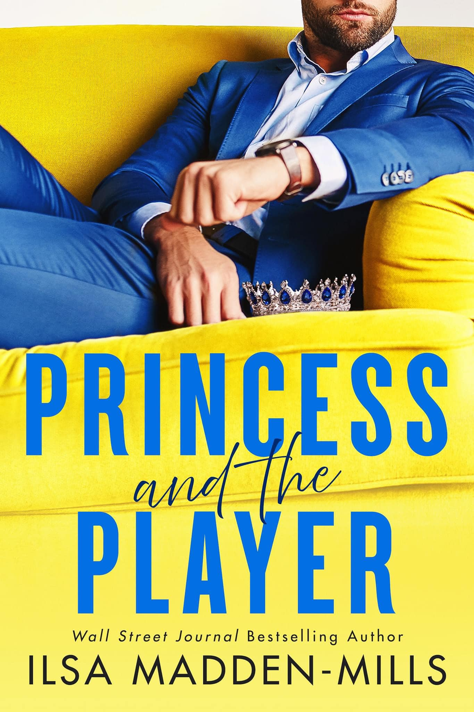
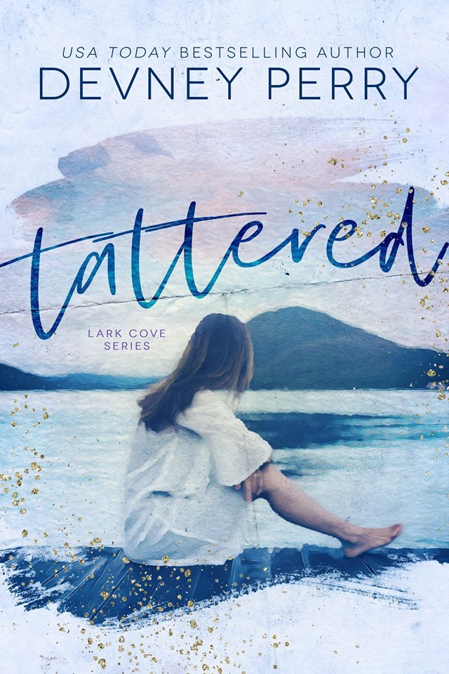

| BOOK |
SYNOPSIS |

A lie for A lie by Helena Hunting
|
- From the New York Times bestselling author of the Pucked series comes a romantic comedy about instant attraction, second chances, and not-so-little white lies.
Sometimes I need an escape from the demands, the puck bunnies, and the notoriety that come with being an NHL team captain. I just want to be a normal guy for a few weeks. So when I leave Chicago for some peace and quiet, the last thing I expect is for a gorgeous woman to literally fall into my lap on a flight to Alaska. Even better, she has absolutely no idea who I am.
Lainey is the perfect escape from my life. My plan for seclusion becomes a monthlong sex fest punctuated with domestic bliss.
But it ends just as abruptly as it began. When I’m called away on a family emergency, I realize too late that I have no way
to contact Lainey.
A year later, a chance encounter throws Lainey and me together again. But I still have a lie hanging over my head, and Lainey’s keeping secrets of her own. With more than lust at stake, the truth may be our game changer.
|

Princess and the Player by Ilsa Madden-Mills
|
- Level-headed Francesca Lane never thought she’d miss her own wedding. But when her fiance betrays her, she puts on her wedding dress and ditches the altar for a masquerade ball.
There, she meets NFL star Tuck Avery, dressed as a prince and hiding behind a mask as he celebrates his birthday. For one night, Francesca and Tuck indulge in a wickedly incognito affair. No names. No strings. And the masks don’t come off.
Unfortunately, Francesca soon realizes her prince is the wealthy jock who lives in the penthouse of her apartment building. His hobbies include parties and supermodels—or so the tabloids say. Another shallow jerk is the last thing Francesca needs, so she vows to keep Tuck from recognizing her, not that she’s his type anyway.
But fate has a teeny-tiny trick up her sleeve… a plus sign on a pregnancy test. Can this tormented prince accept love, or will he push his princess away forever?
Princess and the Player is a complete stand-alone romance with nuanced characters and a swoony happily ever after.
|

Tattered by Devney Perry
- Thea Landry has always known her place in modern-day society. It’s somewhere just above the trash can her mother dumped her in as a newborn but below the class where much comes easy. With her tattered shoes and bargain-bin clothes, her life has never been full of glamour.
So when a rich and charismatic man takes interest, she doesn’t fool herself into thinking their encounter is anything more than a one-night stand. Months later, she’s kicking herself for not getting his phone number. Or his last name. She’s given up hope of seeing him ever again.
Until one day, years later, Logan Kendrick waltzes into her life once more and turns everything she’s built upside down. This time around, she won’t make the same mistake. She’s going to fight to keep him in her life—not for herself.
|
|

The Winter King By CL Wilson
- After three long years of war, starkly handsome Wynter Atrialan will have his vengeance on Summerlea's king by taking one of the man's beautiful, beloved daughters as his bride. But though peace is finally at hand, Wynter's battle with the Ice Heart, the dread power he embraced to avenge his brother's death, rages on.
Khamsin Coruscate, Princess of Summerlea and summoner of Storms, has spent her life exiled to the shadows of her father's palace. Reviled by her father, marriage to Wintercraig's icy king was supposed to be a terrible punishment, but instead offers Kham her first taste of freedom—and her first taste of overwhelming passion.
As fierce, indomitable Wynter weathers even Khamsin's wildest storms, surprising her with a tenderness she never expected, Kham wants more than Wynter's passion—she yearns for his love. But the power of the Ice Heart is growing, dangerous forces are gathering, and a devastating betrayal puts Khamsin and Wynter to the ultimate test.
|
|